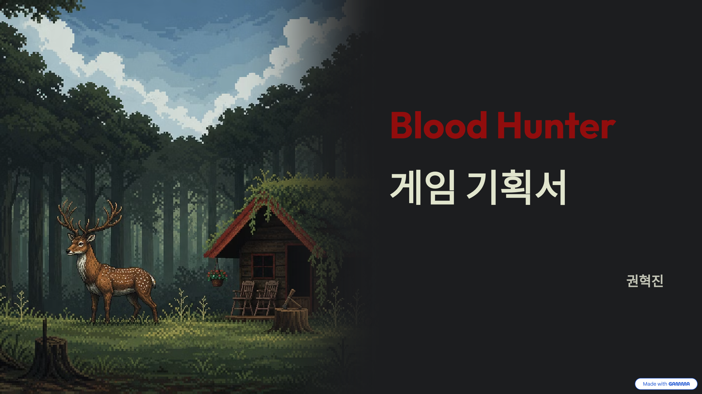

01. 목표 경험 — 실패와 선택을 통한 플레이어의 성장
환경과 탐험으로 왕국의 진실을 발견하고, 전투 실패에서 패턴과 대응을 학습하도록 구상했습니다. 캐릭터 수치의 상승과 함께 플레이어 자신의 판단·숙련이 성장하는 경험을 목표로 합니다.
혈액을 흡수해 강해질 것인가, 정화해 인간성을 지킬 것인가. 선택과 전투를 연결한 2D 액션 어드벤처 기획.

역병으로 몰락한 왕국에서 사냥꾼이 저주의 근원을 추적하는 2D 횡스크롤 소울라이크·메트로배니아 기획입니다. 탐험으로 이동 능력을 넓히고, 패링과 약점 파괴로 보스를 공략한 뒤 혈액의 흡수 또는 정화를 선택합니다. 전투력과 인간성 사이의 선택이 NPC 상호작용과 결말에 연결됩니다.
환경과 탐험으로 왕국의 진실을 발견하고, 전투 실패에서 패턴과 대응을 학습하도록 구상했습니다. 캐릭터 수치의 상승과 함께 플레이어 자신의 판단·숙련이 성장하는 경험을 목표로 합니다.
한손검은 1~3회 기본 공격, 도끼는 1~2회 강공격과 1회 차지 공격, 방패는 타이밍에 맞춘 패링을 담당합니다. 공격과 패링은 보스의 약점 게이지를 누적시키며, 약점이 생성됐을 때 차지 공격으로 파괴하는 흐름입니다.
약점 게이지가 100%에 도달하면 약점 마크가 생성됩니다. 일정 시간 누적이 없으면 게이지가 감소합니다. 강력한 공격 중에는 게이지와 무관한 일시적 약점이 생기며, 도끼 차지 공격으로 파괴하면 보스 공격을 중단시키고 강한 피해를 준 뒤 게이지와 마크를 초기화합니다.
보스의 특별한 혈액은 휴식 포인트에서 흡수하거나 정화할 수 있습니다. 흡수하면 야성 단계가 오르고 전투 능력이 강화되며, 정화하면 레벨업·거래용 재화를 얻습니다. 야성이 높아지면 NPC 이벤트와 엔딩 접근에도 변화가 생깁니다.
각 스테이지 보스를 처치하면 이동기술을 얻도록 기획했습니다. 도약 점프와 그래플의 예시를 통해 이전에 접근하지 못했던 플랫폼·오브젝트와 새로운 이동 경로를 연결합니다. 진행 지역은 검은숲 → 황무지 → 마을 → 지하수로 → 왕국입니다.
일반 적을 처치해 수집한 혈흔은 레벨업과 상점 구매에 사용합니다. 사망하면 소지 혈흔을 해당 위치에 떨어뜨리며, 회수 전에 다시 사망하면 이전 혈흔이 영구 소실되는 규칙입니다. 보스 혈액의 선택 자원과 혈흔 재화를 구분합니다.
원문은 레퍼런스 분석, 전투·성장·탐험 규칙, 지역별 적과 보스 설정, 인게임 UI 항목과 개발 환경·BM 구상으로 구성됩니다. 레퍼런스 분석의 설명과 Blood Hunter 자체 규칙을 구분해 정리했습니다. 데이터테이블과 일부 패턴·콘셉트아트 항목은 보완이 필요합니다.
원문의 탐험 → 성장 → 보스 전투 → 선택 구조와 이동기술 보상을 연결해 재구성한 도식입니다.
야성 단계 상승과 전투 능력 강화. 단계에 따라 NPC 이벤트와 엔딩 접근이 제한됩니다.
레벨업·거래용 재화 획득. 즉시 전투 강화와 다른 방식의 성장을 선택합니다.
강화 효과와 상호작용 변화가 함께 발생하는 구조입니다. 각 선택의 실제 선호도와 밸런스는 검증할 항목입니다.
| 야성 | 이성 | 능력 변화 | 세계·상호작용 변화 |
|---|---|---|---|
| 0 | 100 | 정상 상태 | 기본 상태 |
| 1 | 75 | 최종 대미지·체력 +5% | 특정 엔딩 제한 |
| 2 | 50 | 최종 대미지·체력 +10%, 공격 속도 +10% | 특정 엔딩 제한, 일부 NPC 이벤트 변경 |
| 3 | 25 | 최종 대미지·체력 +15%, 약점 피해 +20% | 특정 엔딩 제한, 일부 NPC 이벤트 봉쇄, 필드 적 추가 |
| 4 | 0 | 최종 대미지·체력 +20%, HP 리게인 +15% | 특정 엔딩 제한, 모든 NPC 상호작용 봉쇄, 필드 적 추가 |
원본에 적힌 단계별 수치입니다. 단계 효과의 누적/대체 방식과 HP 리게인의 계산 기준은 추가 명세가 필요합니다.
| 지역 | 보스 | 서사 설정 요약 |
|---|---|---|
| 검은숲 | 숲의 파수꾼 | 저주로 이성을 잃고 생명을 침입자로 인식하는 수호자 |
| 황무지 | 탐식의 목자 | 목장을 지키려다 저주에 잠식된 존재 |
| 마을 외곽 | 칠흑의 지휘관 | 야성을 받아들인 용병단장 |
| 지하수로 | 황혼 수호자 | 저주 이후에도 왕의 명령을 수행하는 수호자 |
| 왕국 | 국왕 알브리히트 | 왕비를 구하려던 시도 끝에 저주의 근원이 된 국왕 |
원본의 보스 설정 요약입니다. 각 보스의 상세 패턴과 전투 밸런스는 별도 보완 대상입니다.
Lies of P의 페이탈 어택, Bloodborne의 HP 리게인, Dead Cells의 패링·탐험 구조, Blasphemous와 Dark Souls의 UI를 조사했습니다. 예를 들어 레퍼런스 설명의 피해 배율을 Blood Hunter의 확정 피해 공식으로 사용하지 않았습니다.
문서에는 Unity 6·C#·Git/GitHub 등의 개발 환경과 본편 16,000원·사운드트랙 5,500원의 가격 구상이 제시돼 있습니다. 실제 사용 이력·출시 가격·매출 성과는 확인 전입니다.
두 경로로 생성되는 약점 마크의 우선순위와 수명을 명세하는 개선안을 제안합니다. 게이지 100% 약점이 열린 상태에서 강력한 공격이 시작될 때, 일시 약점 종료가 기존 마크까지 지우는지 등을 상태 전이표로 정의하면 전투 판정과 피드백을 일관되게 설명할 수 있습니다. 이번 원본 검토에서 추가한 제안입니다.
게이지 100% / 강력한 공격 / 동시 발생 / 마크 종료 / 파괴 성공·실패를 시나리오 표로 작성 → 예상 상태와 UI를 정의 → 프로토타입 또는 수동 규칙 검토로 대조
테스트 미실시 · 결과 및 개선 성과 placeholder
Placeholder · 이미지 등록 예정